Part Three — A ServiceNow AI Agent Studio Workshop
Agents & the Pub Quiz
Wiring the skill, the action and a lookup into a single AI agent — so a quiz can be conjured up from a sentence of plain English.
Well done for making it this far. You've built the app with Build Agent, created a skill that puts AI to work inside the app, and used a flow to automate the generation of a whole quiz from a catalogue item.
Now we want to look at the power of agents — and how we can use them to perform specific tasks for us automatically, off the back of a single conversational prompt.
An agent is given a set of steps to perform and a number of tools to perform them with. Those tools can be skills, flows, scripts — anything we can wire in.
Open AI Agent Studio → Create and Manage.
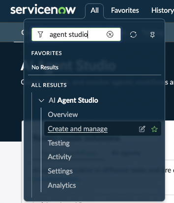
AI Agent Studio — where agents are born.
Select AI Agents and click Add. Make sure you're in the correct application scope if you've just logged in.
First, give the agent a name and a description. This matters — later, when we make this agent agentic, the description is what helps the LLM understand what the agent can do.
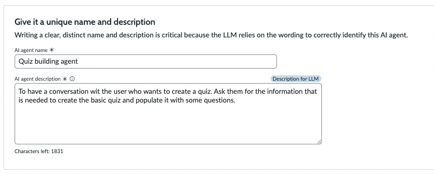
Name and describe — the description is read by other LLMs deciding whether to call this agent.
Defining the role and the steps
Next we need to define the agent's role and its list of steps. You may have to come back and adjust the steps as we add tools and adjust what the tools do — but for now, put an outline of the steps the agent needs to perform. Think of this as the process flow the agent will follow.
Field
Value
AI Agent Role
You're an expert quiz creator. Your task is to have a conversation with the user to find out what kind of quiz they want to run, and then create some sample questions and set up the quiz for them.
List of Steps
Ask the user for the following information if they haven't provided it already:
What the quiz will be called and a rough description. If they've provided information in the description that you need, use it — don't ask again.
Where the quiz will be held / the location.
What the topics are — make sure you have at least 3 different topics and arrange them in a list.
How many rounds. If the user isn't sure, suggest at least one round per topic.
How many questions they want in each round. If unsure, suggest around 5.
How they'd like the difficulty distributed. For example, percentages of each type, or just "a mix" or "more easy than hard".
When they're planning to run the quiz.
Whether the user is running the quiz, or someone else. If someone else, get their name.
Look up the name of the host (from 1h) to make sure they're a user in ServiceNow. Use a tool to find the user. If they can't be found, let the user know — ask again, or suggest they could be the host for now.
Provide a summary of the information provided, and verify the user is happy with it.
Use the Pub Quiz Question and Answer Generator to create the outline quiz. It will return a JSON of the questions.
Pass this JSON on to the Parse Quiz JSON action. It will take this JSON and create the quiz records, and return the sys_id of the new quiz record. This is needed in the next step.
Update the quiz using the Update Quiz Tool with the quiz sys_id from step 5 and the additional information provided by the user.
Give the user a summary of the kind of questions the quiz generator has produced.
All other options on this page we'll leave off for now — we don't need long-term memory at this point. Click Save and Continue.
✦ ✦ ✦
Section 02 — ToolsAdding the tools the agent will use
Tools are what make the agent work — think of them as the equipment the agent reaches for to get a job done. We're going to use the quiz generator skill we created in Part Two, the Parse Quiz JSON action to create the records, and a record lookup so we can find the host user.
Tool 1 — The Quiz Generator skill
Click Add Tool and select Now Assist Skill.
Pick the Pub Quiz Question and Answer Generator skill.
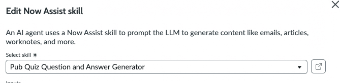
The skill from Part Two, now picked as a tool for the agent.
The required fields will get populated for you. Scroll down, fill in the name and description, and pick Autonomous.
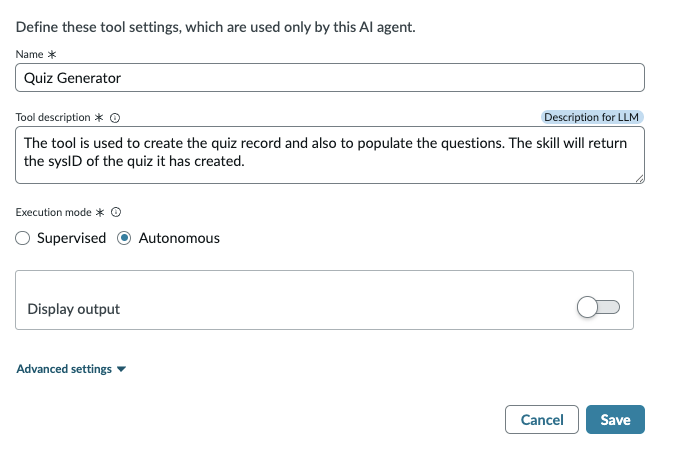
Set the tool to Autonomous — the agent will fire it without asking.
Note: as with everything else, the description gives the LLM pointers as to how to fill in the tool's inputs and what it will return. Put as much context as makes sense in the description.
Click Add.
Tool 2 — The Parse Quiz JSON action
Click Add Tool again and this time select Flow Action.
Pick the Parse Quiz JSON action we created earlier.
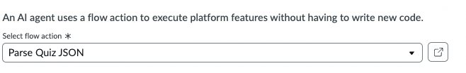
The action from Part Two, joining the toolkit.
Fill in the information about the action — again, make the description as descriptive as possible — and set this one to Autonomous too.
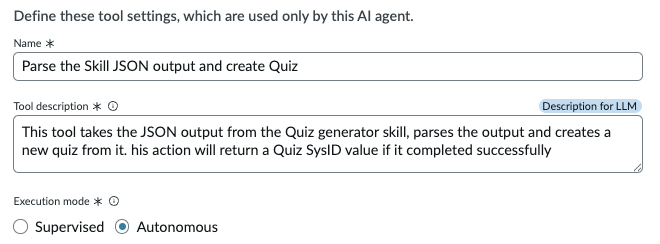
Describe and set to Autonomous.
Click Add.
Tool 3 — Looking up the host user
We need to look up the user who will host the quiz, so we have their sys_id to pass into the final step. Someone might give us a user ID, full name, or email — so the lookup needs to be flexible.
Click Add Tool again.
Select Record Operation.
Give the tool a name and description, and specify the input. The user might give the User ID, full name, or email address in a single field.
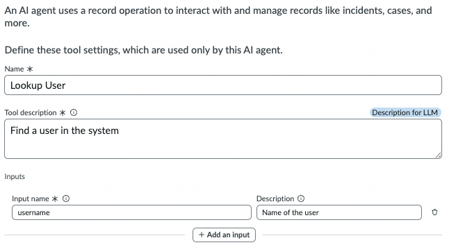
One flexible input field — name, email, or user ID, anything goes.
Add the User table as the place to search, and set the record operation to Lookup Records.
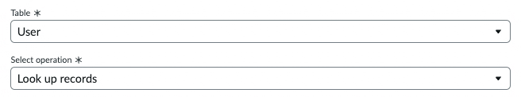
Search the User table, retrieve only — no writes here.
The filter should match on name, user ID, or email — we'll just do an OR across those fields and return the first record we find. We could return more and ask the user to pick.
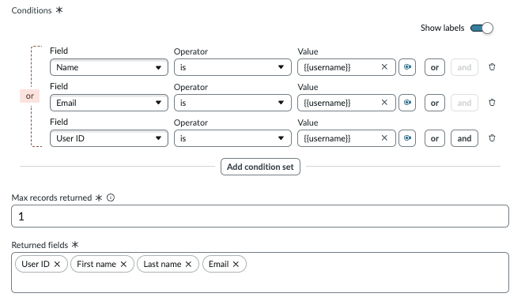
OR across the three fields — flexible matching, first hit wins.
Specify the fields you want to return, order by first name, and put the output in A to Z order.
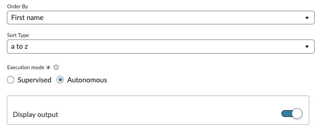
Pick the fields the agent needs back, sorted predictably.
Click Add.
✦ ✦ ✦
Section 03 — Subflow toolA subflow to update the quiz
Sometimes the standard Update Record tool inside the agent doesn't do quite what we want — so let's create an action or a subflow to do it for us. Switch over to ServiceNow Studio and ask Build Agent to create the subflow.
Use this prompt in Build Agent:
Create a subflow called "Update Quiz Details" in the Pub Quiz Organiser app. The subflow should accept the following inputs:
- **quiz_sys_id** (String, mandatory) — the sys_id of the quiz record to update
- **description** (String, optional) — the quiz description
- **host** (String, optional) — the sys_id of the host user
- **venue** (String, optional) — the venue name
- **date** (DateTime, optional) — the date and time of the quiz
The subflow should update the record on the `x_snc_pub_quiz_o_0_quiz` table (identified by quiz_sys_id) setting the description, host, venue, and date fields with the input values. Run as system with public access so it can be invoked by an AI agent.
Once that's completed, go back to the Agent setup window and add the subflow.
Click Add Tool and select Subflow.
Pick the subflow you just created — the input fields will be shown.
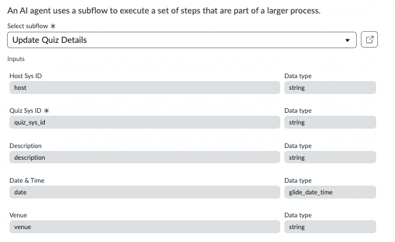
The freshly-built subflow, ready to be wired in.
Give the subflow tool a name and a description. Be specific — especially if the fields the agent is working with don't 100% match the subflow inputs, a clear description helps the agent pass the right information.
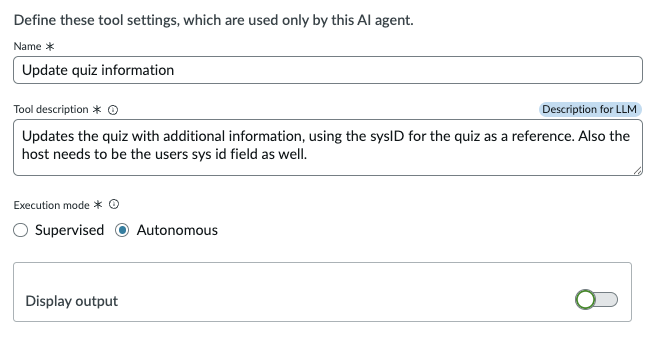
A clear description here saves a lot of debugging later.
Click Add.
Click Save and Continue to move on to the next stage.
✦ ✦ ✦
Section 04 — Access & triggersDefining user access, data access and triggers
There are two things we need to define for this agent:
User Access — who can see and use this agent.
Data Access — what role the agent has when accessing and updating data.
Specify the roles for each section. For user access we'll go with snc_internal — anyone internal to the organisation. We might want to be more specific in real life, but for our POC this is fine.
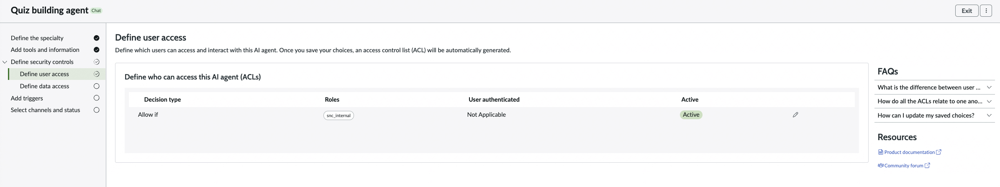
User Access — anyone internal can call this agent.
Click Save and Continue.
For data access, we'll specify snc_internal too, since we haven't locked down the data tables we'll be accessing.
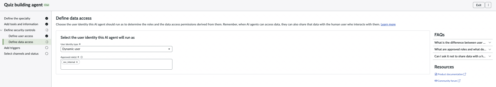
Data Access — the role the agent runs as when it reads and writes.
Click Save and Continue.
Agent Triggers
If we wanted this agent to start when a record is updated, or at specific times during the day, we could specify that here.
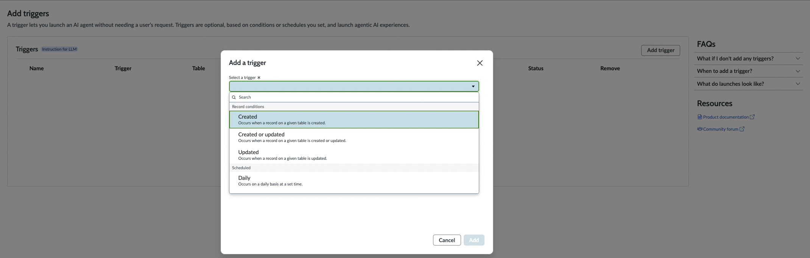
Triggers — we'll leave these blank since we're invoking from chat.
We don't want a trigger here — we're going to invoke this from the agent window — so leave it blank and click Save and Continue.
✦ ✦ ✦
Section 05 — Channels & statusWhere this agent lives
This page is where we say whether this agent should be accessible from the virtual agent — which we do want.
Check the Allow box on the Chat Assistant dialogue.
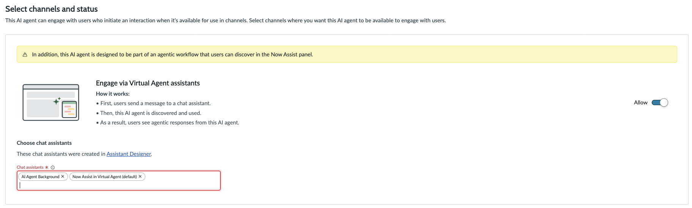
Allow the agent to be invoked from the Chat Assistant.
Specify the virtual agents this should appear in. If you have different virtual agents for different portals or spaces, you need to specify all of them.
Finally, make the agent active — at the bottom of the page, check This AI Agent is active.
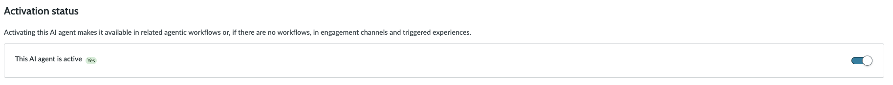
The all-important active toggle.
Click Save and Test to move into the testing phase.
You may get a dialogue saying there are other agents like yours, which on a shared environment is likely. If the highlighted agent looks similar, go and change the name and description slightly to make yours different.
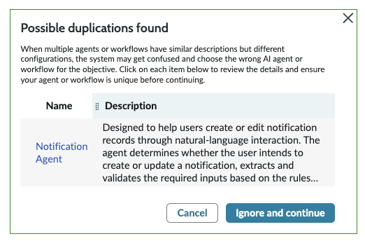
Shared environments breed similar agents — easy to fix.
If the agent shown is nothing like yours, just click Ignore and Continue.
✦ ✦ ✦
Section 06 — TestingTesting the AI Agent
You'll now see a window where you can put in your test prompt to start the process. You can give just a small amount of information, or a lot — the choice is yours. I'd suggest trying different test scenarios to mimic real chats.
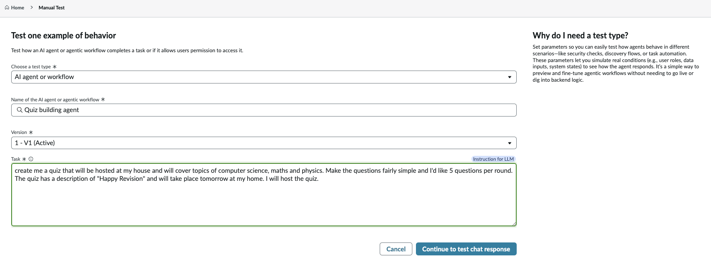
The agent test window — your sandbox for prompt experiments.
create me a quiz that will be hosted at my house and will cover topics of computer science, maths and physics. Make the questions fairly simple and I'd like 5 questions per round. The quiz has a description of "Happy Revision" and will take place tomorrow at my home. I will host the quiz.
I've actually given most of the information up-front in that prompt. It's missing the number of rounds, so let's see how the agent handles it.
First, it's identified me as the host and gone off to look up my user record. Then it moves on to giving a summary:
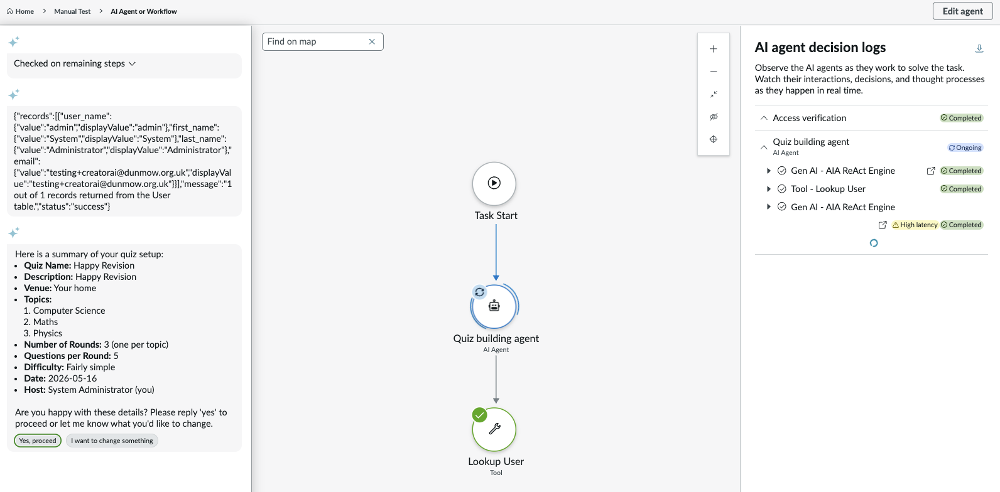
Host identified, missing field flagged, summary presented for sign-off.
I agree to this and let it proceed.
It's then started the quiz generator as per the instructions and created the quiz, but it's now asking whether I want to proceed to update the rest of the information — which is exactly what I asked it to do:
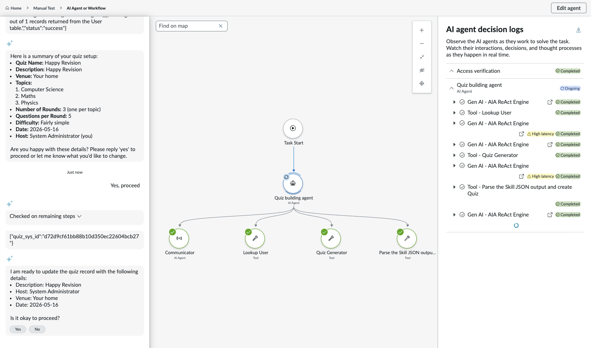
Confirming before the final update — sensible defensive behaviour from the agent.
The agent has now given me a summary as per the instructions and completed the task it was given:
Section 07 — Virtual AgentUsing the agent in Virtual Agent
Now the agent is active, we can try it for real.
Log into a service portal and open the Virtual Agent.
Paste in the instructions from before.
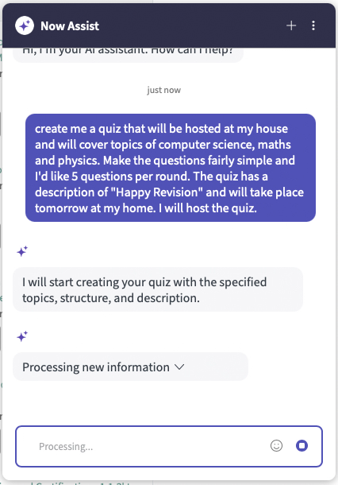
Virtual Agent — same prompt, same agent, real channel.
The agent will now fire off and build the quiz for us.
✦ ✦ ✦
Section 08 — Tidy up & playTidying the output and playing with prompts
Now that we've run the agent a few times, you'll have seen a lot of JSON and debug information come through. Let's go back to the agent's tools and switch off the output for any tool that shouldn't be talking to the user.
Go back to the Tools window and select the tool to clean up. In this example the action outputs a sys_id — we don't need the user to see that.
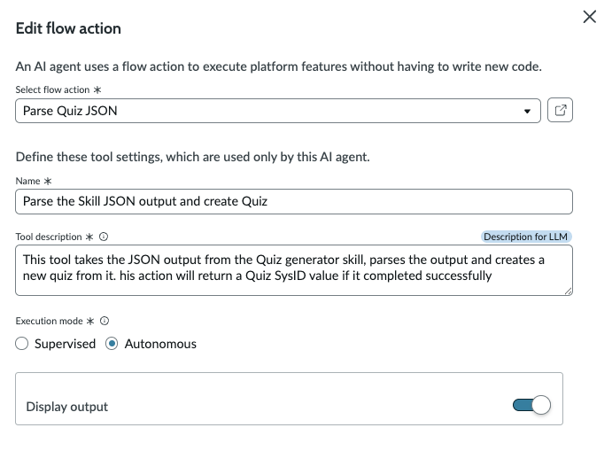
The Display Output toggle — turn it off for any tool the user shouldn't hear from.
Switch Display Output to off.
Repeat for any other tools that don't need to output.
Update the Update Quiz tool to be Autonomous.
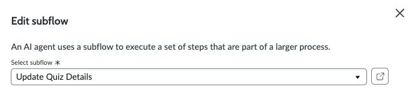
Set the update tool to Autonomous so the agent doesn't pause to ask.
Play around with the prompts
Now we have it working, try some different requests. This one I built for my kids — slightly harder questions:
create me a quiz that will be hosted at my house and will cover topics of computer science, maths and physics. Make the questions suitable for a 15 year old, doing GCSEs and I'd like 5 questions per round. The quiz has a description of "Happy Revision" and will take place tomorrow at my home. I will host the quiz.
The agent came back with some harder questions:
Same agent, different audience — GCSE-level questions on demand.
What you've built across the trilogy: a fully-functional Pub Quiz Manager scaffolded with Build Agent, an AI skill that authors quizzes, a catalogue-item flow that drives them in, and now an agent that wraps the lot behind a single conversational prompt. From here, the next steps are yours — extra tools, agentic triggers, multi-agent handoffs, image generation per round… have fun.